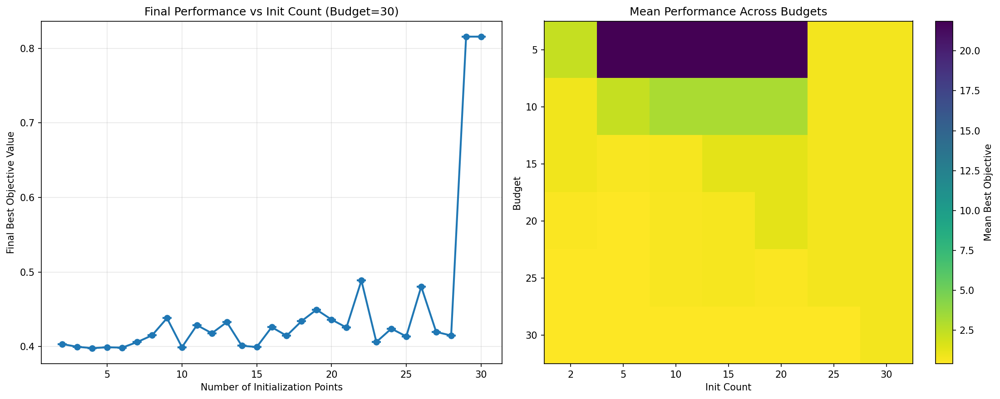

Branin Campaign Results - Smoke Test
1. Convergence Curves (with Regret Analysis)
This plot shows three panels comparing different initialization counts:
- Left: Absolute convergence curves (raw objective values)
- Middle: Regret convergence curves (normalized, removes vertical offsets)
- Right: Final performance vs initialization count
2. Sanity Check Plots
Performance analysis across different budgets and initialization counts:
